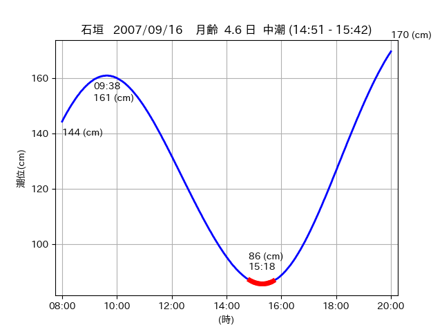

<!DOCTYPE html>
<html>
<head>
    
    <meta http-equiv="content-type" content="text/html; charset=UTF-8" />
    
        <script>
            L_NO_TOUCH = false;
            L_DISABLE_3D = false;
        </script>
    
    <style>html, body {width: 100%;height: 100%;margin: 0;padding: 0;}</style>
    <style>#map {position:absolute;top:0;bottom:0;right:0;left:0;}</style>
    <script src="https://cdn.jsdelivr.net/npm/leaflet@1.9.3/dist/leaflet.js"></script>
    <script src="https://code.jquery.com/jquery-3.7.1.min.js"></script>
    <script src="https://cdn.jsdelivr.net/npm/bootstrap@5.2.2/dist/js/bootstrap.bundle.min.js"></script>
    <script src="https://cdnjs.cloudflare.com/ajax/libs/Leaflet.awesome-markers/2.0.2/leaflet.awesome-markers.js"></script>
    <link rel="stylesheet" href="https://cdn.jsdelivr.net/npm/leaflet@1.9.3/dist/leaflet.css"/>
    <link rel="stylesheet" href="https://cdn.jsdelivr.net/npm/bootstrap@5.2.2/dist/css/bootstrap.min.css"/>
    <link rel="stylesheet" href="https://netdna.bootstrapcdn.com/bootstrap/3.0.0/css/bootstrap-glyphicons.css"/>
    <link rel="stylesheet" href="https://cdn.jsdelivr.net/npm/@fortawesome/fontawesome-free@6.2.0/css/all.min.css"/>
    <link rel="stylesheet" href="https://cdnjs.cloudflare.com/ajax/libs/Leaflet.awesome-markers/2.0.2/leaflet.awesome-markers.css"/>
    <link rel="stylesheet" href="https://cdn.jsdelivr.net/gh/python-visualization/folium/folium/templates/leaflet.awesome.rotate.min.css"/>
    
            <meta name="viewport" content="width=device-width,
                initial-scale=1.0, maximum-scale=1.0, user-scalable=no" />
            <style>
                #map_2e03475fdaad376a5af6c9b8ba081170 {
                    position: relative;
                    width: 2048.0px;
                    height: 1600.0px;
                    left: 0.0%;
                    top: 0.0%;
                }
                .leaflet-container { font-size: 1rem; }
            </style>
        
</head>
<body>
    
    
            <div class="folium-map" id="map_2e03475fdaad376a5af6c9b8ba081170" ></div>
        
</body>
<script>
    
    
            var map_2e03475fdaad376a5af6c9b8ba081170 = L.map(
                "map_2e03475fdaad376a5af6c9b8ba081170",
                {
                    center: [24.212, 124.005],
                    crs: L.CRS.EPSG3857,
                    ...{
  "zoom": 12,
  "zoomControl": true,
  "preferCanvas": false,
}

                }
            );

            

        
    
            var tile_layer_31bfc3dbb1a07f896f4490e27ae2e819 = L.tileLayer(
                "https://cyberjapandata.gsi.go.jp/xyz/seamlessphoto/{z}/{x}/{y}.jpg",
                {
  "minZoom": 0,
  "maxZoom": 18,
  "maxNativeZoom": 18,
  "noWrap": false,
  "attribution": "\u5730\u7406\u9662\u5730\u56f3",
  "subdomains": "abc",
  "detectRetina": false,
  "tms": false,
  "opacity": 1,
}

            );
        
    
            tile_layer_31bfc3dbb1a07f896f4490e27ae2e819.addTo(map_2e03475fdaad376a5af6c9b8ba081170);
        
    
            var marker_605e5b751f4e58f8dbb291a4c6336011 = L.marker(
                [24.2072, 123.9251],
                {
}
            ).addTo(map_2e03475fdaad376a5af6c9b8ba081170);
        
    
            var icon_bafd0833fabf51caeee5afa9b5ebdbfe = L.AwesomeMarkers.icon(
                {
  "markerColor": "orange",
  "iconColor": "white",
  "icon": "info-sign",
  "prefix": "glyphicon",
  "extraClasses": "fa-rotate-0",
}
            );
        
    
        var popup_ddd17f5b068d1ecd1844dacda94d2ef3 = L.popup({
  "maxWidth": "100%",
});

        
            
                var html_64289e6ff71ddbc6ba8e02b3703ab468 = $(`<div id="html_64289e6ff71ddbc6ba8e02b3703ab468" style="width: 100.0%; height: 100.0%;"><table><tr><td></td></tr><tr><td><center>20070916 No.1 </center></table></td></tr></table</div>`)[0];
                popup_ddd17f5b068d1ecd1844dacda94d2ef3.setContent(html_64289e6ff71ddbc6ba8e02b3703ab468);
            
        

        marker_605e5b751f4e58f8dbb291a4c6336011.bindPopup(popup_ddd17f5b068d1ecd1844dacda94d2ef3)
        ;

        
    
    
                marker_605e5b751f4e58f8dbb291a4c6336011.setIcon(icon_bafd0833fabf51caeee5afa9b5ebdbfe);
            
    
            var poly_line_ec2e1f2b6239c05f4bb8f5255b4affdf = L.polyline(
                [[24.2072, 123.9251], [24.2024, 123.9372]],
                {"bubblingMouseEvents": true, "color": "#00FFFF", "dashArray": null, "dashOffset": null, "fill": false, "fillColor": "#00FFFF", "fillOpacity": 0.2, "fillRule": "evenodd", "lineCap": "round", "lineJoin": "round", "noClip": false, "opacity": 1.0, "smoothFactor": 1.0, "stroke": true, "weight": 3}
            ).addTo(map_2e03475fdaad376a5af6c9b8ba081170);
        
    
            var marker_5980ef77efc61675f897707259a77ed9 = L.marker(
                [24.2062, 123.928],
                {
}
            ).addTo(map_2e03475fdaad376a5af6c9b8ba081170);
        
    
            var icon_e24f14346ba28cdcca125aefe4b1a93b = L.AwesomeMarkers.icon(
                {
  "markerColor": "orange",
  "iconColor": "white",
  "icon": "info-sign",
  "prefix": "glyphicon",
  "extraClasses": "fa-rotate-0",
}
            );
        
    
        var popup_7f0c47fff4a7d0cce0400f7a551dcc60 = L.popup({
  "maxWidth": "100%",
});

        
            
                var html_0206fdaba7cd2d77a4c851718a71a9b4 = $(`<div id="html_0206fdaba7cd2d77a4c851718a71a9b4" style="width: 100.0%; height: 100.0%;"><table><tr><td></td></tr><tr><td><center>20070916 No.2 </center></table></td></tr></table</div>`)[0];
                popup_7f0c47fff4a7d0cce0400f7a551dcc60.setContent(html_0206fdaba7cd2d77a4c851718a71a9b4);
            
        

        marker_5980ef77efc61675f897707259a77ed9.bindPopup(popup_7f0c47fff4a7d0cce0400f7a551dcc60)
        ;

        
    
    
                marker_5980ef77efc61675f897707259a77ed9.setIcon(icon_e24f14346ba28cdcca125aefe4b1a93b);
            
    
            var poly_line_3713a7334e2ad64eb38debea9ce72de5 = L.polyline(
                [[24.2062, 123.928], [24.2037, 123.9337]],
                {"bubblingMouseEvents": true, "color": "#00FFFF", "dashArray": null, "dashOffset": null, "fill": false, "fillColor": "#00FFFF", "fillOpacity": 0.2, "fillRule": "evenodd", "lineCap": "round", "lineJoin": "round", "noClip": false, "opacity": 1.0, "smoothFactor": 1.0, "stroke": true, "weight": 3}
            ).addTo(map_2e03475fdaad376a5af6c9b8ba081170);
        
    
            var marker_e125d31f2abaca4968a951c87c5a3edf = L.marker(
                [24.2132, 124.0033],
                {
}
            ).addTo(map_2e03475fdaad376a5af6c9b8ba081170);
        
    
            var icon_021ec8ad17b7b76460603c1d3a84963a = L.AwesomeMarkers.icon(
                {
  "markerColor": "orange",
  "iconColor": "white",
  "icon": "info-sign",
  "prefix": "glyphicon",
  "extraClasses": "fa-rotate-0",
}
            );
        
    
        var popup_dd6764df5a49da1e11557884665037e1 = L.popup({
  "maxWidth": "100%",
});

        
            
                var html_abcfac11772636e376188a2e476efb80 = $(`<div id="html_abcfac11772636e376188a2e476efb80" style="width: 100.0%; height: 100.0%;"><table><tr><td></td></tr><tr><td><center>20070916 No.3 </center></table></td></tr></table</div>`)[0];
                popup_dd6764df5a49da1e11557884665037e1.setContent(html_abcfac11772636e376188a2e476efb80);
            
        

        marker_e125d31f2abaca4968a951c87c5a3edf.bindPopup(popup_dd6764df5a49da1e11557884665037e1)
        ;

        
    
    
                marker_e125d31f2abaca4968a951c87c5a3edf.setIcon(icon_021ec8ad17b7b76460603c1d3a84963a);
            
    
            var poly_line_85423343a0626c6f9c52b24ddffde4b1 = L.polyline(
                [[24.2132, 124.0033], [24.2114, 124.007]],
                {"bubblingMouseEvents": true, "color": "#00FFFF", "dashArray": null, "dashOffset": null, "fill": false, "fillColor": "#00FFFF", "fillOpacity": 0.2, "fillRule": "evenodd", "lineCap": "round", "lineJoin": "round", "noClip": false, "opacity": 1.0, "smoothFactor": 1.0, "stroke": true, "weight": 3}
            ).addTo(map_2e03475fdaad376a5af6c9b8ba081170);
        
</script>
</html>